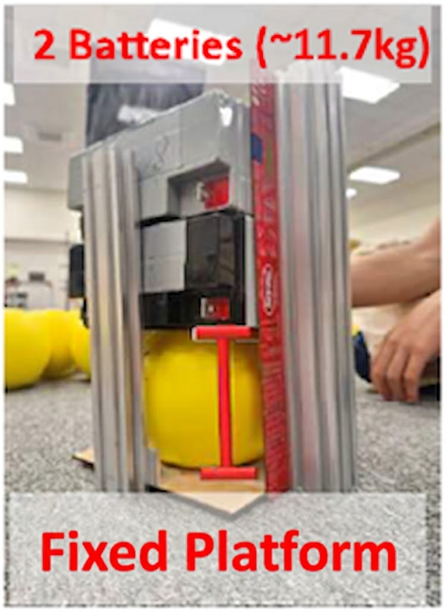
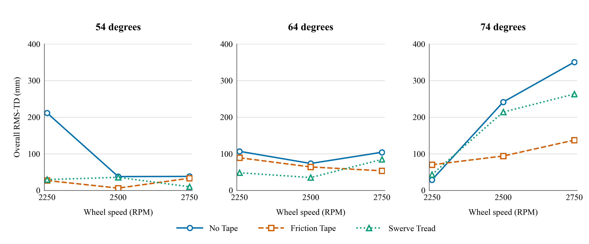

Flywheel Surfaces &
Trajectory Consistency
How does a flywheel’s contact surface affect the consistency of launched balls, and does that change with the operating setting?
Does one surface produce more consistent trajectories?
I studied an FRC-style flywheel launcher using three tested surface installations: an exposed compliant wheel, a friction-tape covering, and a swerve-tread covering. I compared recorded trajectories while varying launch angle, wheel speed, and the balls’ measured compression category.
Compare surfaces across the same launch settings
No Tape · Friction Tape · Swerve Tread
54°, 64°, 74°
2250, 2500, 2750 RPM
15, 18, 23 mm deformation under a fixed static load
Two shots were recorded per surface–compression–angle–speed condition: 162 recorded trajectories across 81 conditions. One trajectory with a substantial tracking gap was excluded, leaving 161 usable trajectories in the primary analysis.

Compare trajectories at matched horizontal positions
Launches were filmed at a nominal 240 frames per second and tracked in Tracker. I normalized trajectory origins and interpolated heights onto 46 shared horizontal positions from 0.10 to 1.00 m.
The main descriptive measure, root-mean-square trajectory dispersion (RMS-TD), summarizes how far the recorded vertical profiles spread around their configuration mean. It measures observed trajectory spread, rather than scoring probability or three-dimensional accuracy.

The surface ranking depended on the setting
Friction Tape had lower observed overall RMS-TD than Swerve Tread in five of nine matched angle–speed settings; Swerve Tread had lower values in four. The paired comparison did not establish a systematic overall difference after adjustment for multiple comparisons.
Swerve Tread had the lower separately calculated median dispersion, while Friction Tape had the lower observed maximum configuration-level dispersion. These summaries describe different aspects of the data; neither establishes a universally best surface.
Separate what the data show from what they cannot resolve
- Only one physical installation of each surface was tested, so surface category cannot be separated from that installation’s condition and wear.
- Testing followed a fixed surface order rather than a randomized order, leaving possible time-dependent confounding.
- Balls were reused without shot-linked individual IDs, preventing a ball-specific repeated-measures analysis.
- Two shots per condition limit estimates of variability. A tracking-gap exclusion and sensitivity checks also affected interpretation.
Revisions following NHSJS reviewer feedback are complete. Results from the Taiwan Academic Essay Competition are pending. The revision work included checking trajectory exports and calibration, comparing statistical summaries, and narrowing claims to the tested installations and conditions.